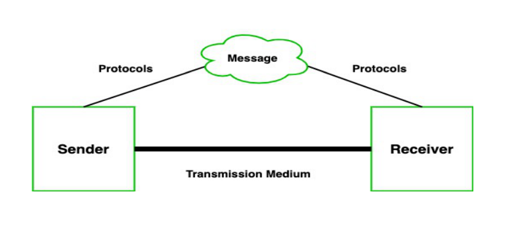
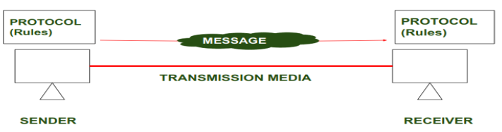
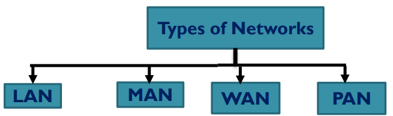
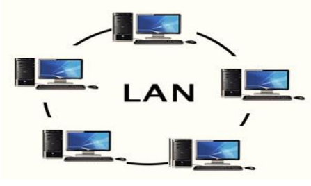
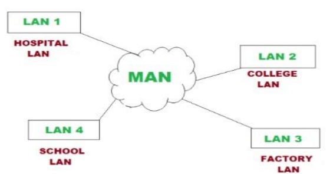
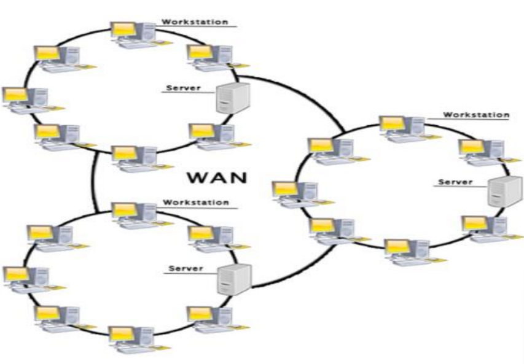
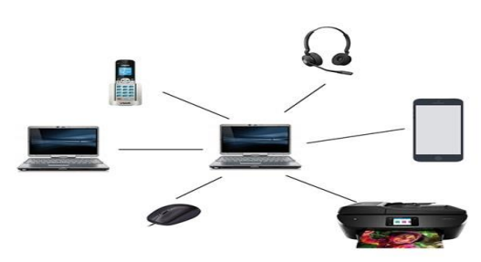

Computer Network
@Debuggers
Network
Network is a group of computers connected with each other through wires,optical fibres or optical links
so that various devices can intract with each other through a network.
Networking
Computer networking refer to interconnected computing devices
that can exchange data and share resources with each other.
Overview of Data Communication Networks
Communication is defined as a process in which more than computers
transfers information, instructions to each other and for sharing resources.
The effectiveness of any data communications system depends upon
four fundamental characteristics.
- Message-A message is a piece of information that is to be transmitted from one person to another.It would
be transmitted from one person to another.It could be a text file, an audio file
,video file etc.
- Sender-It is simply a device that sends data message.It can be
a computer,mobile,telephone,laptop,video camera or workstation etc.
Receiver-It is a device that receives messages.It can be a computer,
telephone,mobile,workstation etc.
- Transmission Medium/Communication channels-Communication channels are the medium that
connect two or more workstations. workstations can be connected by either wired media or
wireless media.
- Set of Rules(Protocol)-When someone sends the data(The sender),it
should be understandable to the receiver also otherwise it is meaningless.
For example,sonali sends a message to chetan.If sonali writes in hindi
and chetan cannot understand hindi,it is meaningless conversation.

Types of data communication
The data communicationis divided into three types:-
- Simplex Communication-It is a one way Communication or we can say
that unidirectional communication in which one device only
receives and another device only send data and devices uses their
entire capacity in transmission.For example,Iot,Entering data using a
keyboard, listening music using a speaker etc.
- Half Duplex Communication-It is a two way communication,or we
can say that is a bidirectional communication in which both the devices can send and
receive data but not at the same time.For example walkie-Talkie,Intrent browsing.
- Full Duplex Communication-It is a two way Communication or we can
say that it is bidirectional communication in which both the devices can send
and receive data at same time.For example, mobile phone,
landlines etc.
Protocol and standard in computer networks
Protocols and Standards are important in Computer networks.They are like the rule and guidelines
that allow different devices and system to communicate and works together
smoothly.Protocols define how data is sent,received,and processed,while standards ensure that
various technologies are compatible with each other.
What is Protocol?
A protocol is a set of rules that determines how data is sent and received
over s network.The protocol is just like a language that computers use to talk to each other, ensuring
they understand that can respond to each other's message correctly.Protocol help to make sure that
data moves smootly and securely between devices on a network.

In a above diagram, Protocols are shown as a set of rules.Communication between the sender and
Receiver is not possible without protocol.
Key Elements of Protocol
- Timing: Timing refers to the synchronization and coordination
between devices while transferring the data. Timing ensures at what
time data should be sent and how fast data can be sent. For example,
If a sender sends 100 Mbps but the receiver can only handle 1 Mbps,
the receiver will overflow and lose data. Timing ensures preventing
of data loss, collisions, and other timing-related issues.
- Sequence Control:Sequence control ensures the proper ordering of
data packets. The main responsibility of sequence control is to
acknowledge the data while it get received, and the retransmission of
lost data. Through this mechanism, the data is delivered in correct order.
- Flow Control:Flow Control regulates device data delivery. It limits
the sender's data or asks the receiver if it's ready for more. Flow
control prevents data congestion and loss.
- Error Control:Error Control mechanisms detect and fix data
transmission faults. They include error detection codes, data resend,
and error recovery. Error control detects and corrects noise,
interference, and other problems to maintain data integrity.
- Security:Network security protects data confidentiality, integrity,
and authenticity. which includes encryption, authentication, access
control, and other security procedures. Network communication's
privacy and trustworthiness are protected by security standards.
Types of Protocol
Network Layer Protocols
Transport Layer Protocols
Application Protocols
Wireless Protocols
Routing Protocols
Security Protocols
Internet Protocols
Important Protocols Used in Computer Network
TCP (Transmission Control Protocol): Ensures data is sent and received accurately by
breaking it into packets, sending them, and reassembling them at the destination.
IP (Internet Protocol): Addresses and routes the packets to make sure they reach the right
destination.
HTTP/HTTPS (Hypertext Transfer Protocol/Secure): HTTP used for transferring
web pages on the internet.
FTP (File Transfer Protocol): Used for transferring files between computers on a network.
It allows users to upload and download files.
DNS (Domain Name System): DNS: DNS stands for Domain Name System. An IP address
is used to identify the connection of a host to the internet uniquely. But, people prefer to use the
names instead of addresses. Therefore, the system that maps the name to the address is known as
Domain Name System.
DHCP (Dynamic Host Configuration Protocol): Automatically assigns IP addresses
to devices on a network, ensuring each device has a unique address.
SMTP (Simple Mail Transfer Protocol): Used for sending emails. It transfers emails
from a client to a server or between servers.
SSH (Secure Shell): Provides a secure way to access and manage devices over a network. It
encrypts the data, making it safe from eavesdropping.
SNMP (Simple Network Management Protocol): Used for managing and monitoring network devices like routers, switches, and servers. It collects and organizes
information about these devices.
TYPES OF NETWORK
- Local Area Network(LAN)
- Wide Area Network(WAN)
- Metropolitan Area Network(MAN)
- Personal Area Network(PAN)

LAN(Local Area Network)
- Local Area Network is a group of Computers connected to each other
in a small area such as building,office.
- LAN is used for connecting two or more personal computers through communication
medium such as twisted pair cable,coaxial cable etc
- The data is transferred at an extremely faster rate in Local Area Network

Metropolitan Area Network(MAN)
MANor Metropolitan area Network covers a larger area than that
of a LAN and smaller area as compared to WAN. It connects two or more
computers that are apart but resides in the same or different cities. It covers
a large geographical area and may serve as an ISP (Internet Service Provider).

WAN(Wide Area Network)
- A Wide Area Network is a network that extends over a large geographical
area such as states or countries.
- A Wide Area Network is quite bigger network than the LAN & MAN.
- A Wide Area Network is not limited to a single location, but it spans over a
large geographical area through a telephone line, fibre optic cable or satellite
links.

Examples of Wide Area network
- Mobile Broadband.
- Last mile.
- Private network.
PAN(Personal Area Network)
- Personal Area Network is used for connecting the computer devices of
personal use is known as Personal Area Network.
- Thomas Zimmerman was the first research scientist to bring the idea of the
Personal Area Network.
- Personal Area Network covers an area of 30 feet.
- Personal computer devices that are used to develop the personal area
network are the laptop, mobile phones, media player and play station.

There are two types of Personal area network:-
- Wired Personal Area Network
- Wiredless Personal Area Network
Wireless Personal Area Network:Wireless Personal Area Network is developed
by simply using wireless technologies such as Wi-Fi, Bluetooth. It is a low range network.
Wired Personal Area Network:Wired Personal Area Network is created by using the USB.